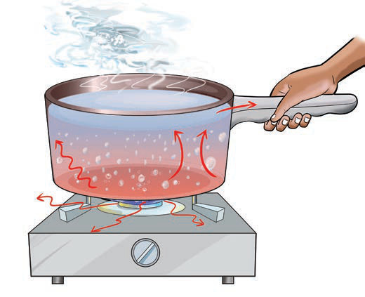

cloth was exposed to the sun, it dried due to the heat from the sun.
Conclusion
In this experiment, we learnt that the wet cloth dried due to the sun’s heat. The sun’s heat transfers to objects through empty space by radiation.
In the experiments you conducted, you found that heat can be transferred in three main ways: conduction, convection and radiation.
(a)
Conduction is the transfer of heat energy in solids, such as metal.
(b)
Convection is the transfer of heat energy in fluids such as liquid and gases.
(c)
Radiation is the transfer of heat energy in empty spaces. The three ways of heat transfer are illustrated more in Figure 5.
